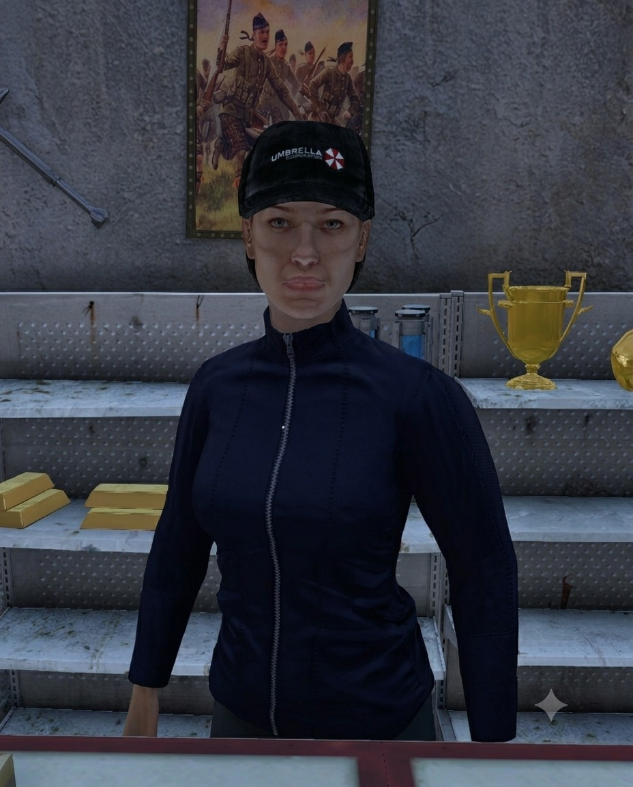

What Gabi Buys
- Drippy sneakers
- Fallout bobbleheads
- Fallout Nuka Cola collectables
- Paragon collectables
- Vyse collectables
- Sealed Pokémon collection boxes
- Adult toys
A mainland collectables trader who buys rare finds and sealed Pokémon collection boxes, while supplying storage solutions for collectors.
Before the world fell apart, people collected things because they wanted them. Now they collect them because finding something useless, beautiful, and untouched by the collapse is proof that the old world existed at all.
Gabi understood that earlier than most.
She established The Curator’s Refuge as a quiet clearinghouse for the strange pieces survivors kept dragging out of abandoned homes, ruined shops, and forgotten collections across Chernarus. Sneakers nobody would dare wear anymore. Bobbleheads pulled from dusty shelves. Nuka-Cola memorabilia. Pokémon collections somehow still sealed after everything else had gone to hell.
To Gabi, none of it is junk. Every piece has a story, and every story has a price.
Her mainland location makes her considerably easier to reach than the collectors operating out of Cinder Market, although convenience comes at a cost. Gabi rarely pays the highest price for anything. She doesn’t pretend otherwise.
What she does offer is something considerably rarer: a fair deal, a safe counter, and a reason to keep looking.
